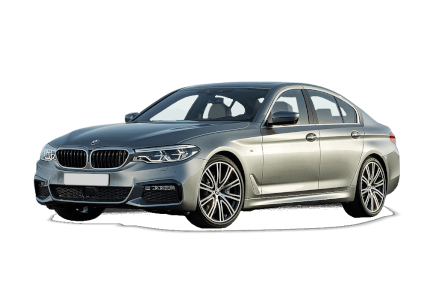

BMW | |
 |
BMW es un fabricante alemán de automóviles y motocicletas de alta gama y lujo, cuya sede se encuentra en Múnich. Sus subsidiarias son Mini, Rolls-Royce, BMW i y BMW Bank. |
BMW SERIE 3 |
|
El BMW Serie 3 es una serie de modelos de gama alta del segmento D del fabricante BMW con los cuales la firma alcanza los números de producción más altos. Ha sido producido por siete generaciones. |
 |
CARACTERISTICAS |
|
Potencia |
245 |
peso |
1650 |
precio |
51800,00 |
consumo |
6.5 |
cilindrada |
2.0 |
BMW SERIE 4 |
|
El BMW Serie 4 es un automóvil deportivo de gama alta que el fabricante BMW comenzó a vender en 2013. Tiene motor delantero longitudinal, tracción trasera o a las cuatro ruedas, y carrocerías coupé, descapotable y liftback. |
|
CARACTERISTICAS |
|
Potencia |
340 |
peso |
1600 |
precio |
82000,00 |
consumo |
6.7 |
cilindrada |
3.0 |
BMW SERIE 5 |
|
El BMW Serie 5 es un automóvil de turismo de gama alta del segmento E producido por el fabricante alemán BMW. Los primeros modelos Serie 5 fueron lanzados en 1972, y actualmente se encuentra en la séptima generación. La Serie 5 está a la venta en carrocerías sedán y familiar. |
 |
CARACTERISTICAS |
|
Potencia |
395 |
peso |
1840 |
precio |
103000,00 |
consumo |
8.2 |
cilindrada |
4.4 |
BMW SERIE 8 |
|
El BMW Serie 8 con código de chasis E31, es un automóvil deportivo construido por el fabricante alemán BMW entre los años 1989 y 1999; y luego con código de chasis G15 a partir de 2018. |
CARACTERISTICAS |
Potencia |
550 |
peso |
1820 |
precio |
120000 |
consumo |
10.6 |
cilindrada |
4.4 |